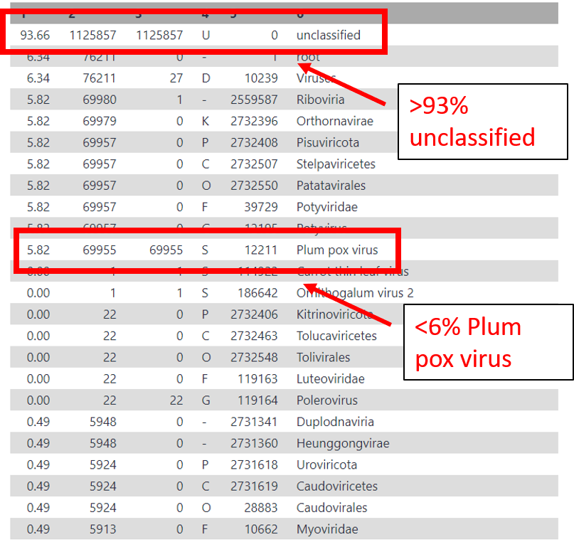

Metagenomics¶
Lecture¶
Introduction¶
In metagenomics, information about micro-organisms in an environment can be extracted with two main techniques:
Amplicon sequencing, which sequences only the rRNA or ribosomal DNA of organisms
Shotgun sequencing, which sequences full genomes of the micro-organisms in the environment
In this tutorial, we will focus on shotgun sequencing.
Read Assignment with Kraken¶
In this tutorial we will be using kraken to identify members in a mixed set of metagenomic reads.
Hands-On: Taxonomic Read Assignment with Kraken
In the tools menu search for ‘kraken’ tool and click on it.
Run kraken with the following parameters:
Single or paired end reads:
pairedForward strand: Click the upload dataset icon and upload
SampleC_nonhost_reads_R1.fastq.gzfile from the metagenome folder.Reverse strand: Click the upload dataset icon and upload
SampleC_nonhost_reads_R2.fastq.gzfile from the metagenome folder.
Select a kraken database:
viral_2020Leave all others as default and click
Execute
Examine Kraken Output¶
You should see a new output file at the top of your history panel called Kraken on data x: Classification. Lets take a look at it.
When the file turns green (analysis done running) click on the eye icon next to the file to view it.
The columns correspond to the following:
“C”/”U”: one letter code indicating that the sequence was either classified or unclassified.
The sequence ID, obtained from the FASTA/FASTQ header.
The taxonomy ID Kraken used to label the sequence; this is 0 if the sequence is unclassified.
The length of the sequence in bp.
A space-delimited list indicating the LCA mapping of each k-mer in the sequence. For example, “562:13 561:4 A:31 0:1 562:3” would indicate that:
the first 13 k-mers mapped to taxonomy ID #562
the next 4 k-mers mapped to taxonomy ID #561
the next 31 k-mers contained an ambiguous nucleotide
the next k-mer was not in the database
the last 3 k-mers mapped to taxonomy ID #562
After looking at the first few sections of the results, in general are more reads classified or unclassified?
You should see the first column contains a lot of “U’s”, therefore most of the reads appear to be unclassified. Remember, we are just screening these against the virus database, so these reads could be host, bacteria, etc.
Kraken Report¶
While the raw kraken output contains a lot of information, it is impossible to make sense of without summarizing it. Here, we will generate a kraken report to summarize the results.
Hands-On: Generate a Kraken Report
In the tools menu search for ‘kraken-report’ tool and click on it.
Run kraken-report with the following parameters:
Kraken output:
Kraken on data x: ClassificationSelect a Kraken database:
viral_2020
When this analysis finished running it should generate a file Kraken-report on x. Click the eye icon next to the result file and view the results.
The columns in the output correspond to the following:
percentage of reads in the clade/taxon in Column 6
number of reads in the clade.
number of reads in the clade but not further classified.
code indicating the rank of the classification: (U)nclassified, (D)omain, (K)ingdom, (P)hylum, (C)lass, (O)rder, (F)amily, (G)enus, (S)pecies).
NCBI taxonomy ID.
Scientific name
What is the predominant classified species in the sample?
You should see the majority of the sample was unclassified (probably host), and the predominant virus in the sample was plum pox virus.
